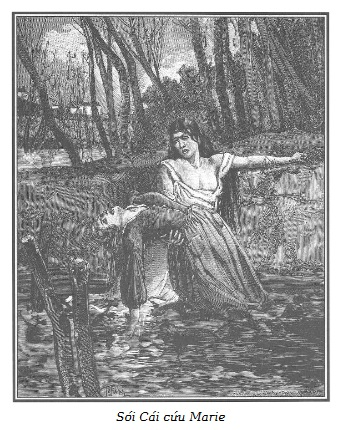

Trước khi để độc giả biết kết cục tấn thảm kịch xảy ra trên cái xuồng có nút ở dưới đáy của Martial, chúng tôi xin quay trở lại với câu chuyện đang kể dở. Không bao lâu sau khi Marie và mụ Séraphin rời Saint-Lazare thì Sói Cái cũng được ra khỏi nhà giam.
Nhờ những lời gửi gắm của bà Armand và ông giám đốc, cả hai người muốn ân thưởng cho Sói Cái vì việc làm tốt đẹp của cô ta đối với chị Mont-Saint-Jean, người yêu của Martial được xuất trại sớm vài ngày.
Vả chăng, đã có một sự thay đổi hoàn toàn diễn ra trong tâm trí của con người từ trước đến nay vốn hư hỏng và bất trị.
Luôn nghĩ đến cuộc sống yên tĩnh, nặng nhọc và quạnh quẽ do Marie khơi gợi, Sói Cái kinh hãi nhớ lại quãng đường đời đã qua của mình.
Trong quãng thời gian mà người phụ nữ kỳ lạ ấy tự ý xin chuyển qua một khu khác của trại giam Saint-Lazare để thoát ly ảnh hưởng ngày càng lớn của Sơn Ca, đối với cô ta, việc vào ở ẩn trong rừng sâu với Martial là mục đích duy nhất, là ý định bất di bất dịch của Sói Cái, bất chấp những phản ứng vô hiệu quả của bản năng xấu xa trong quá khứ.
Để sự hoán cải nhanh chóng và thành thục ấy đã tiến hành được và còn chắc chắn, vững vàng trước những thói tật đồi bại hoài công lôi cuốn người bạn tù của mình, Marie, do lương tri mộc mạc thôi thúc, đã biện giải sự việc ấy như thế này:
Sói Cái, con người chai sạn và hung bạo ấy, yêu Martial say đắm, vậy thì chị ta tất nhiên sẽ vui vẻ chấp nhận thoát khỏi cuộc sống nhơ nhớp trước đây mà chị ta lần đầu trong đời cảm thấy hổ thẹn, và chỉ như vậy mới hoàn toàn phó thác mình cho gã đàn ông thô lỗ, cộc cằn và cô độc, nhưng lại hợp với mọi thiên hướng của mình, con người muốn sống cô độc vì sở thích đã đành, mà còn vì muốn xa lánh sự khinh khi mà gia đình đáng ghét của anh ta phải đeo đẳng.
Chỉ dựa vào một số tình tiết rút ra trong khi tâm sự với Sói Cái, Marie đã khéo léo định hướng cho mối tình dữ dội và tính cách liều lĩnh của con người ấy để biến được một người con gái hư hỏng trở thành một người phụ nữ lương thiện. Vì chỉ mơ tưởng đến một cuộc sống ẩn dật trong rừng sâu cùng Martial và cam chịu sống lao động vất vả thiếu thốn, chẳng phải đó là nguyện vọng dĩ nhiên của một người phụ nữ lương thiện hay sao?
Tin tưởng ở sự nâng đỡ mà Marie đã hứa nhân danh một ân nhân không quen biết, Sói Cái đã trao đổi với người yêu mà không ngại bị anh ta từ chối, vì khi Marie làm cho cô ta biết xấu hổ về quá khứ thì cũng đã làm cho cô ta ý thức được vị trí của mình đối với Martial.
Một khi đã được tự do, Sói Cái chỉ mong gặp lại người yêu. Đã khá lâu cô ta không nhận được tin tức gì về anh ta. Cô ta hy vọng được gặp anh ta trên đảo Ravageur, quyết định sẽ chờ anh ta ở đó nếu chưa gặp, cho nên đã lên một chiếc xe ngựa, trả tiền rất hậu, yêu cầu người đánh xe nhanh chóng đưa mình đến cầu Asnières mười lăm phút trước lúc bà Séraphin và Marie đến chỗ bãi cát gần lò thạch cao.
Đến bốn giờ chiều, một chiếc xe ngựa dừng lại ở một lối nhỏ vào làng Asnières. Cô ta trả cho người đánh xe một trăm xu, nhảy vội xuống và chạy đến nhà lão Férot.
Lúc này, cô ta đã trút bỏ bộ quần áo tù, mặc một áo lông cừu màu xanh thẫm, quàng khăn cổ màu đỏ kiểu Cachemire, đội một mũ vải tuyn có dải, và cố làm cho mượt bộ tóc xoăn. Trong niềm hăng say, nóng lòng được gặp người yêu, cô ta ăn mặc vội vã hơn là chu đáo.
Sau thời gian dài xa cách, bất cứ cô gái nào cũng muốn dành thì giờ trang điểm thật đẹp khi gặp người yêu. Nhưng Sói Cái không chú ý đến chuyện đó. Cô ta nóng lòng gặp người yêu không chỉ vì tình yêu say đắm mãnh liệt thôi thúc mà còn vì muốn thổ lộ với anh ta tất cả những gì mình quyết định sau khi đã trao đổi với Marie.
Chẳng mấy chốc cô ta đã đến nhà cụ đánh cá.
Lão Férot tóc bạc trắng đang ngồi trước cửa vá lưới. Từ xa vừa nhìn thấy ông cụ, cô ta đã kêu lên:
– Bác Férot, thuyền của bác đâu? Nhanh… nhanh… nhanh lên bác ơi!
– À, cháu đấy à, chào cháu, đã lâu không thấy cháu đến!
– Vâng, nhưng thuyền của bác đâu? Nhanh lên bác, cho cháu ra đảo!
– Chà, cháu rõ xúi quẩy! Hôm nay thì không thể được.
– Sao vậy?
– Thằng con lão đã lấy thuyền đi Saint-Ouen để đưa thuyền cho bọn bạn nó. Không còn một chiếc nào dọc bờ sông từ đây đến nhà ga.
Sói Cái giậm chân bực bội:
– Chết thật! Hỏng hết!
– Đúng thế! Hãy tin ở lão! Lão tiếc là không đưa được cháu ra đảo. Vì hình như nó còn tồi tệ hơn nữa kia!
– Tồi tệ hơn? Ai kia? Martial? – Sói Cái túm lấy cổ áo lão Férot – Anh ấy bị ốm chăng?
– Cháu không biết chuyện đó sao?
– Thật Martial chứ?
– Tất nhiên rồi! Nhưng hãy bình tĩnh, cháu làm rách áo lão đây này.
– Anh ấy ốm? Nhưng từ bao giờ?
– Đã hai hoặc ba ngày nay.
– Không đúng! Nếu vậy anh ấy đã viết thư cho cháu rồi.
– Lầm to! Ốm quá thì viết làm sao được.
– Ốm đến không viết được! Và anh ấy đang ở ngoài đảo? Bác chắc như thế à?
– Để lão nói! Sáng nay lão gặp mụ góa Martial, bình thường gặp mụ là lão tránh mặt vì không muốn giao thiệp. Thế rồi…
– Nhưng anh Martial của cháu, anh ấy ở đâu?
– Khoan đã nào! Gặp mụ trực diện, lão đành phải bắt chuyện. Thấy mụ hầm hầm giận dữ, lão rất ngại. “Đã hai ngày tôi không gặp Martial nhà bà” – lão bảo mụ – “chắc là cậu ấy lên tỉnh?” Thế là mụ quắc mắt nhìn lão như muốn ăn sống nuốt tươi ấy!
– Bác làm cháu phát điên lên mất! Rồi sao nữa, sao nữa?
Sau một lúc im lặng, lão Férot nói tiếp:
– Này, cháu là một cô gái tốt, hãy hứa với lão là sẽ giữ bí mật, lão sẽ nói cho cháu mọi chuyện mà lão đã biết.
– Về anh Martial của cháu?
– Đúng, vì cháu biết đấy, Martial hiền hậu nhưng bướng bỉnh. Nếu cậu ấy bị bà mẹ khốn nạn hoặc thằng em kẻ cướp bức hại thì thật đáng tiếc.
– Nhưng chuyện gì đã xảy ra? Mẹ và em trai anh ấy đã làm gì anh ấy? Bác hãy nói đi, nói đi!
– Được, nhưng cháu vẫn cứ túm lấy áo lão. Thả ra nào! Nếu cháu cứ lôi rách cả quần áo lão thì lão làm sao nói cho hết nhẽ, cháu sẽ không biết gì hết.
– Ôi! – Sói Cái giậm chân giận dữ.
– Cháu sẽ không hở cho ai biết những điều lão kể chứ?
– Không, nhất định là không rồi!
– Thề danh dự chứ?
– Bác Férot ơi, bác làm cháu chết mất thôi!
– Ôi, cái con bé này, bướng gớm! Nghe lão nói đây, trước hết là nói để cháu rõ là Martial ngày càng hay hục hặc với gia đình và nếu họ chơi cho cậu ấy vài vố đau thì cũng chẳng lạ. Chính vì thế mà lão phàn nàn là không có xuồng ở nhà, bởi vì nếu cháu trông chờ bọn ở đảo ra đón thì cháu đã nhầm to. Thằng Nicolas hoặc con Quả Bầu đê tiện ấy sẽ chẳng đưa cháu đến đấy đâu!
– Cháu biết rõ chuyện đó. Nhưng mẹ anh ấy đã nói gì với bác? Có đúng là anh ấy bị ốm ở trên đảo không?
– Đừng rối lên như thế! Chuyện là thế này: Sáng nay, lão nói với mụ góa: “Đã hai ngày tôi không thấy Martial. Xuồng của nó cột ở cọc, nó lên tỉnh sao?” Nghe xong, mụ ta trợn mắt nhìn lão bảo: “Nó ốm ở trên đảo, ốm quá, sợ không qua khỏi.” Lão tự hỏi: “Thế là thế nào, mới có ba ngày thôi mà.”
Bỗng lão Férot ngừng lại:
– Ơ này, chạy đi đâu vậy? Đi đâu lúc này?
Lo Martial ở đảo bị hãm hại, Sói Cái cuống cuồng, hoảng sợ. Không nghe lão Férot nói thêm, cô ta chạy một mạch dọc bờ sông Seine.
Độc giả nên biết vài nét về địa hình nơi này để hình dung được cảnh diễn ra sau đây.
Đảo Ravageur gần bờ trái con sông hơn là bờ phải, nơi mà Marie và bà Séraphin xuống xuồng.
Sói Cái ở trên bờ trái.
Không đến nỗi quá dốc, nhưng chiều cao mặt đảo che khuất cả hai bên bờ sông trên một quãng dài bờ bên này, không thấy bờ bên kia. Do đó người yêu của Martial không thấy Marie xuống thuyền và bọn lượm đồ trên sông cũng không thấy Sói Cái lúc này đang chạy dọc theo bờ sông bên kia.
Sau hết, cần lưu ý độc giả, ngôi nhà ở nông thôn của bác sĩ Griffon mà Bá tước de Saint-Remy tạm ở được xây ở lưng chừng, gần bờ cát mà Sói Cái lúc này đang cuống cuồng chạy tới.
Cô ta chạy qua mà không thấy hai người đang chú ý theo dõi thái độ hớt hải của mình. Hai người đó là Bá tước de Saint-Remy và bác sĩ Griffon.
Hành động đầu tiên của cô ta là chạy cuống cuồng đến nơi mà người yêu của mình đang gặp nguy hiểm. Nhưng càng đến gần đảo, cô ta càng cảm thấy khó có thể sang được vì lão Férot đã cho cô ta biết là đừng hy vọng tìm được một chiếc thuyền lạ nào, và chẳng có người nào trong gia đình Martial muốn ra đón cô ta.
Hơi thở hổn hển, nước da đỏ tía, mắt long lanh, cô ta dừng lại phía đối diện mũi đảo, khúc đó hơi cong và nhích lại khá gần bờ.
Qua những cành liễu và cành dương rậm lá, cô ta nhìn thấy mái ngôi nhà nơi Martial có thể đang chết dần.
Cô ta gào lên một tiếng khủng khiếp, quẳng mũ, tụt áo, chỉ còn độc cái váy ngắn, dũng cảm lao xuống sông, lội một đoạn rồi đến khúc sâu, cô ta bơi nhanh về phía đảo.
Hành động quyết tâm và liều lĩnh dễ sợ. Cứ mỗi sải tay, mớ tóc dài và dày của cô ta lại xõa ra, vì những động tác quá mạnh mẽ, rung rinh quanh đầu cô ta như một cái bờm óng ánh vàng.
Nếu không thấy cái nhìn chăm chú xoáy vào phía nhà Martial với nét mặt căng thẳng vì lo âu ghê rợn, người ta tưởng như người yêu của Martial đang hớn hở với sông nước. Cô gái ấy bơi thỏa thuê, mạnh mẽ thế kia mà! Hai cánh tay trắng, có dấu xăm kỷ niệm người yêu với sức mạnh hiếm có, gạt nước tung tóe chảy như những viên ngọc quanh bờ vai rộng, trên bộ ngực to, chắc nịch làm cho người ta có cảm giác một bức tượng cẩm thạch ngập nước nửa người.
Bất thình lình, từ phía bên kia đảo vang lên một tiếng kêu cầu cứu, một tiếng kêu hấp hối, rùng rợn, tuyệt vọng.
Sói Cái rùng mình và dừng lại. Sau đó cô ta bơi một tay, còn tay kia, hất mớ tóc dày ra phía sau và lắng nghe.
Một tiếng kêu nữa, yếu hơn, nhưng vang hơn, ú ớ, ngắc ngoải. Thế rồi lại lặng ngắt như tờ.
– Anh của em!!! – Sói Cái kêu lên và tiếp tục bơi mạnh mẽ hơn.
Trong lúc bối rối, cô ta ngỡ là đã nhận ra tiếng kêu của Martial. Khi thấy Sói Cái bơi qua, ông Bá tước và ông bác sĩ không biết làm thế nào để ngăn chặn hành động táo bạo này.
Họ đến trước đảo, ngay lúc vọng lên hai tiếng kêu khủng khiếp.
Họ dừng lại và cũng bất ngờ như Sói Cái.
Thấy cô gái dũng cảm chiến đấu với dòng nước, họ kêu lên:
– Cô bé khốn khổ chết đuối mất!
Nhưng nỗi sợ hãi đó chỉ là thừa.

.Cô người yêu của Martial bơi nhanh như một con rái cá, với vài sải tay, con người dũng cảm đó đã đến bờ. Chân vừa chạm đất, để ngoi lên khỏi mặt nước, cô ta dựa vào một trong những cái cọc, tạo nên ở phía trên đảo như một bậc thang, trong lúc đó bất thình lình dọc theo hàng cột, trôi theo dòng nước là thân hình một cô gái ăn mặc kiểu thôn nữ, nhờ quần áo còn nổi trên mặt nước. Không kịp suy nghĩ, một tay nắm cọc, còn tay kia bất ngờ túm lấy áo người bị nạn kéo mạnh về phía mình và bằng đôi tay lực lưỡng, cô ta bế người bị nạn như bế một đứa trẻ, lội thêm vài bước dưới nước, rồi đưa vào bờ đặt nằm trên thảm cỏ. Lúc này cô ta mới nhận ra đó chính là Marie.
– Can đảm lên! Can đảm lên! – Ông de Saint-Remy cùng ông bác sĩ kêu lên khi chứng kiến cảnh cứu nạn dũng cảm đó. – Chúng tôi sẽ qua cầu Asnières và đem xuồng đến giúp cô.
Rồi cả hai vội vàng đi về phía cầu.
Những lời động viên không đến tai Sói Cái.
Xin nhắc lại là từ phía bờ sông Seine, nơi mà Nicolas, Quả Bầu và mẹ chúng đứng, sau tội ác kinh tởm của mình, chúng không trông thấy được những gì đang diễn ra bên bờ bên kia đảo do bị độ dốc che khuất.
Marie đột nhiên được Sói Cái kéo vào phía trong hàng cọc, do đã có lúc cô chìm nghỉm trước mặt bọn giết người nên bọn chúng tưởng là nạn nhân đã chết chìm rồi.
Vài phút sau, dòng nước lại cuốn theo một xác chết khác, mà Sói Cái không thấy. Đó là xác mụ quản gia của viên chưởng khế. Người đàn bà đó đã chết.
Nicolas và Quả Bầu có lợi ích không kém với Jacques Ferrand trong việc thủ tiêu nhân chứng này, kẻ đồng lõa với tội ác vừa đây của chúng. Vì thế, khi chiếc xuồng có xu páp chìm xuống cùng Marie, Nicolas nhảy ào lên chiếc xuồng của cô em gái đang chở mụ Séraphin khiến xuồng tròng trành, và lợi dụng cơ hội đó anh ta xô mụ này xuống sông và kết liễu mụ bằng cái sào nhọn đầu.
Sói Cái kiệt sức, thở hổn hển, quỳ trên bãi cỏ cạnh Marie, lấy lại hơi và quan sát người mà cô ta vừa cứu thoát.
Không thể nào nói hết sự sững sờ khi cô ta nhận ra người bạn của mình trong tù, người đã tác động đến cô ta một cách nhanh chóng và tốt đẹp. Bởi xúc động đột ngột, cô ta đã có lúc quên Martial.
– Sơn Ca! – Cô ta kêu lên và vội chống tay quỳ xuống, nghiêng người, đầu tóc rối bời, quần áo ướt sũng ngắm người bạn gái bất hạnh nằm sóng sượt gần như tắt thở trên bãi cỏ. Xanh xao bất động, mắt hé mở nhưng vô hồn, bộ tóc hung đẹp bết quanh thái dương, đôi môi xanh, đôi bàn tay nhỏ bé lạnh toát, cứng đờ, khiến người ta ngỡ là cô đã chết.
– Sơn Ca! – Sói Cái gọi lại. – Tình cờ làm sao! Người đã nói với tôi bao điều hay, điều tốt, thức tỉnh tôi, bây giờ đang nằm đây, trước mắt tôi, đã chết! Không, không thể thế được! – Sói Cái kêu lên, cúi sát xuống Marie và nghe thấy một hơi thở mệt nhọc của nạn nhân. – Không! Lạy Chúa! Lạy Chúa! Cô ấy còn thở, tôi đã cứu được cô ấy. Vâng, còn người yêu của tôi, tôi cũng phải cứu. Anh ấy giờ này có thể cũng đang rên rỉ. Mẹ và em trai anh ấy có khả năng giết anh ấy. Nhưng tôi không thể bỏ con người khốn khổ này, tôi phải đem cô đến nhà bà góa. Bà ta sẽ cứu chữa và phải cho tôi biết Martial ở đâu hoặc là tôi sẽ phá hết, giết hết. Ôi, không có mẹ nào, em nào, anh nào chống lại được khi tôi thấy anh yêu của tôi ở đấy.
Ôm cô bạn nhẹ nhàng trên tay, cô ta chạy tới nhà Martial, không chút nghi ngờ rằng dù tàn ác đến mấy, mụ góa và con của mụ lại không sơ cứu cho Marie.
Khi Sói Cái lên đến đỉnh cao của đảo, cô ta có thể nhìn được cả hai bên bờ sông, thì Nicolas, mụ góa và Quả Bầu đã đi xa.
Tin là đã hoàn tất việc giết người, bọn chúng đến nhà Cánh Tay Đỏ.
Cùng vào lúc đó, có một người nấp ở một chỗ trên bờ sông che khuất sau chiếc lò thạch cao quan sát cảnh vừa diễn ra, người đó cũng rút êm như bọn giết người vì tin chắc là tội ác đã hoàn tất êm thấm.
Người đó là Jacques Ferrand.
Một trong những chiếc xuồng của Nicolas cột vào một chiếc cọc trên bờ sông đang nghiêng ngả tại nơi mà Marie và mụ Séraphin rời bến. Vừa lúc Jacques Ferrand rời khỏi cái lò thạch cao để về Paris thì ông de Saint-Remy và bác sĩ Griffon vội vã qua cầu Asnières chạy tới, nghĩ rằng có thể nhờ xuồng của Nicolas mà họ đã trông thấy để ra đảo.
Gần đến nhà bọn cướp, Sói Cái vô cùng ngạc nhiên vì thấy cửa đóng kín.
Đặt Marie vẫn còn mê man dưới vòm cây, cô ta đi lại gần ngôi nhà, nhận ra cửa sổ phòng Martial bị chặn bởi một tấm tôn và nẹp phía ngoài bằng hai thanh sắt.
Đoán được một phần sự thật, Sói Cái kêu lên một tiếng khàn vang vọng và gọi to:
– Martial, anh của em!
Không một tiếng trả lời.
Hốt hoảng trước sự im lặng đó, Sói Cái đi quanh căn nhà, như một con thú rừng, vừa đánh hơi, vừa gầm gừ tìm lối vào hang, nơi mà con đực đang bị nhốt.
Thỉnh thoảng cô ta lại la to:
– Anh của em! Anh có ở đây không? Anh của em!
Và trong cơn điên dại, cô ta phá những thanh sắt chặn cửa bếp, cô ta đập vào tường, gõ vào cửa.
Đột nhiên, một tiếng trầm trầm từ phía trong nhà đáp lại.
Cô ta rùng mình lắng nghe.
Tiếng động im bặt.
– Anh ấy đã nghe thấy. Tôi phải vào, dù có phải dùng răng phá cửa.
Và cô ta lại la hét dữ dội.
Từ trong cửa sổ đó có những tiếng động khẽ, yếu ớt đáp lại tiếng kêu của cô ta.
– Anh ấy ở trong đó! – Sói Cái kêu lên và đột ngột dừng lại dưới cửa sổ phòng người yêu. – Anh ấy ở trong này, nếu cần phải lấy móng tay mà nạy lá tôn, tôi cũng sẽ mở bằng được những cửa sổ này.
Vừa nói thế, cô ta thấy một chiếc thang, khuất mất một nửa trong khung cửa phòng dưới. Kéo mạnh khung cửa về phía mình, Sói Cái làm rơi chiếc chìa khóa mà mụ góa giấu bên trên khung cửa. Cô ta thử tra chìa vào ổ khóa, cánh cửa phòng bật mở. Cô ta sung sướng kêu lên:
– Cứu được anh ấy rồi!
Vào trong bếp, cô ta chú ý đến tiếng kêu của hai đứa trẻ bị nhốt dưới hầm, chúng nghe tiếng động khác thường nên cũng lên tiếng kêu cứu.
Mụ góa nghĩ là trong lúc đi vắng sẽ không có ai vào nhà nên đã nhốt François và Amandine, khóa hai vòng và để chìa ở ổ khóa.
Được Sói Cái giải thoát, hai anh em vội vàng ra khỏi hầm.
– Chị Sói Cái ơi, hãy cứu anh Martial của em. Họ muốn giết anh ấy. – François kêu lên. – Họ nhốt anh ấy ở trong phòng hai ngày rồi.
– Họ không đánh anh ấy bị thương chứ?
– Không, không, em không tin như thế!
– Chị đã đến kịp thời! – Sói Cái vừa nói vừa chạy ra cầu thang.
Trèo lên vài bậc thang, cô ta dừng lại nói:
– Chị quên mất Sơn Ca rồi! Amandine, nhóm lửa ngay. Mày và anh mày đưa ngay cô gái suýt chết đuối chị vừa cứu vào gần lò sưởi. Cô ấy đang nằm dưới vòm cây. François tìm ngay cho chị một cái rìu, một thanh sắt để chị phá cửa buồng cứu anh Martial.
– Ở kia có một chiếc rìu bổ củi nhưng rất nặng. – Vừa nói thằng bé vừa kéo chiếc rìu một cách nặng nhọc.
– Nặng quá! – Sói Cái nói nhưng đã nâng được khối sắt đó lên mà trong một hoàn cảnh khác chắc chắn cô ta không thể nào làm được.
Cô ta bước nhanh lên cầu thang, không quên nhắc bọn trẻ đưa ngay người bị nạn vào gần lò sưởi.
Nhảy hai bước, cô ta đã đến cuối hành lang trước cửa phòng Martial.
– Hãy can đảm lên! Anh của em! Em Sói Cái của anh đây. – Vừa nói cô ta vừa vung búa lên, bổ thật mạnh làm cánh cửa rung lên.
– Họ đóng đinh bên ngoài. Hãy nhổ hết đinh đã. – Martial yếu ớt nói.
Quỳ ngay trên hành lang, nhờ chiếc búa bổ củi và cả những ngón tay tóe máu, cô ta đã nhổ được nhiều chiếc đinh lớn đóng dưới cửa sàn và trên khung cửa. Cuối cùng cửa được mở.
Martial xanh xao, bàn tay bê bết máu, gần như đổ gục vào vòng tay Sói Cái.